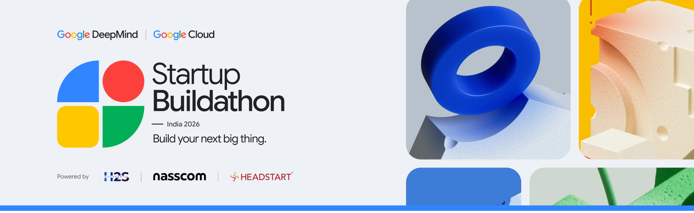
Other apps mark the answer. Focs reads a student's handwritten working with Gemini, finds the first wrong step, and traces it back to the earlier class where understanding broke.
A JEE student gets a torque question wrong. The app says wrong; the teacher says practise more. Fifty questions later it's still wrong, because the problem was never torque: it is Class 11 trigonometry, sin against cos, never really learned.
A photo of the paper, or the rough pad on a tablet. No typing maths.
The first wrong step, slip or gap, a hint, the corrected step on request.
One quick check per earlier-class idea. The deepest miss is the real gap.
A short lesson in the student's language, re-checked before it counts.
Three questions on the stuck chapter before, three new ones after.
For teachers, every student's traces add up to a root-gap map of the batch ("teach first: a recap of Class 11 Trigonometry unblocks 2 students"), with nobody named.
Around the loop is the full Focs platform, live at focs-126082811973.asia-south1.run.app: live lecture notes read by our own OCR model, pop quizzes, NTA-style mocks, study rooms, flashcards, plans, mentors, in 7 Indian language options.
| Check my working | photo or rough pad → steps, first wrong step, slip or gap, hint, fix |
| Root cause | chapter → earlier-class chain → the deepest missing idea |
| 5-minute fix | lesson in the student's language, re-checked |
| Before / after retest | 3 bank questions before, 3 new after |
| How you lose marks | slips vs gaps fingerprint across checked work |
| Focs noticed | silent tracing from test mistakes, no quiz needed |
| Teacher root-gap map | "teach first", class recap, nobody named |
| Gap Genome | map of what JEE/NEET chapters rest on |
| Personal tutor | knows the student's root gaps and slips |
| Live lecture → notes | any tab; FocsOCR reads the board; captions |
| Pop quizzes | locked in as Sure or Guess; blind spots first |
| Mock tests | NTA-style, +4/−1, timer, palette, gap map |
| Study rooms | synced lecture, chat, "I'm lost", confusion map |
| Revision | flashcards (spaced), last-day revision, daily plan |
| People | mentors, Ask a senior (AI draft, senior-checked) |
| Languages | English, Hinglish, Hindi, Marathi, Bengali, Tamil, Telugu, Gujarati |
| Accessibility | read-aloud (formulas as words), WCAG 2.1 AA checks in CI |
| Ops | admin: AI cost per feature, model and student |
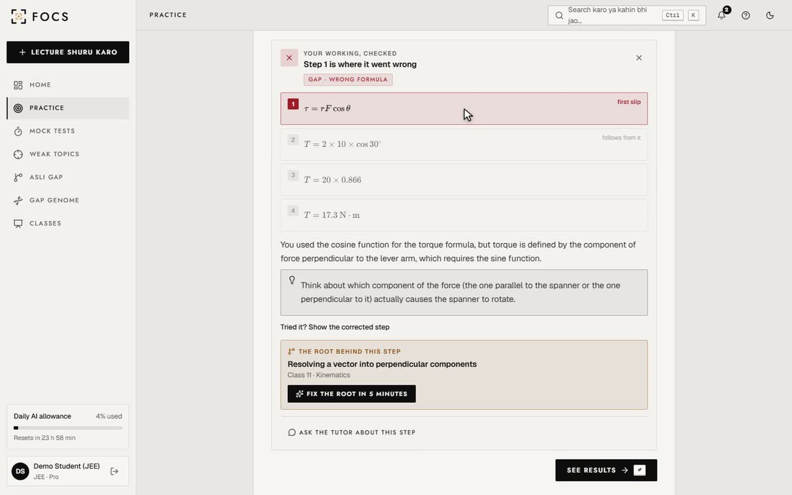
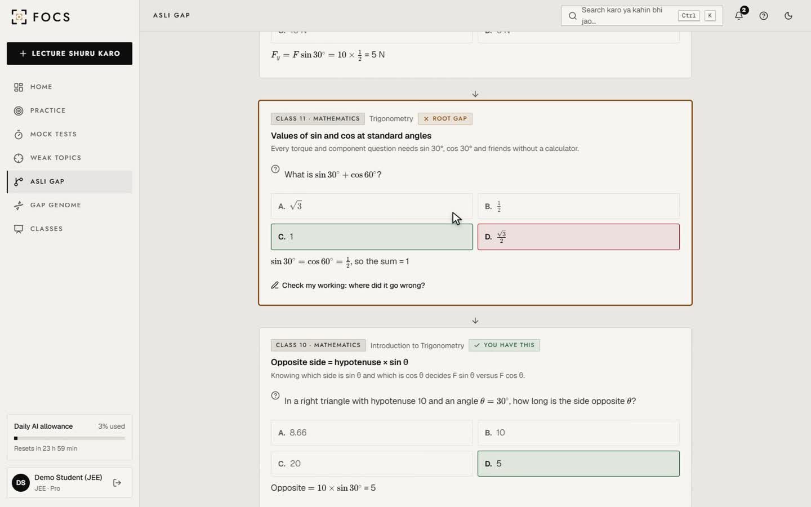
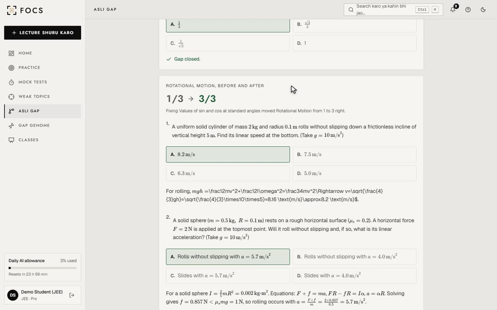
Same layout on phones (390 px) and tablets; the rough pad docks at the bottom. Sample accounts shown; screens captured from the running app.
Gemini reads handwriting and maths in one call, so a photo of paper is enough. One Cloud Run container keeps live classes on one server. The OCR runs on CPU inside it, so reading the board costs nothing per frame. Everything is logged per feature, so the cost is known, not guessed.
From our call log (tokens × Gemini list price, ₹88 / USD), on the demo run
| Call | Model | Tokens in / out | Cost |
|---|---|---|---|
| Check my working (image) | 3.1 Flash-Lite | 1,810 / 264 | ₹0.075 |
| 5-minute lesson | 3.5 Flash-Lite | 422 / 621 | ₹0.15 |
| Chapter chain (once, shared) | 3.5 Flash-Lite | 4,192 / 641 | ₹0.25 |
| Board → notes | 3.x Flash-Lite | ~950 / 150 | ₹0.06 |
A heavy month for one student: 60 working checks + 8 fixes ≈ ₹6 of AI. Chains are shared: the 22 shipped cost nothing more.
| Item | Pilot | ~10k students |
|---|---|---|
| Cloud Run (2 vCPU, 2 GiB) | free tier / ₹1–3k | ≈ ₹10–15k |
| Postgres (Supabase) | ₹0 | ≈ ₹2.2k |
| Gemini API (≈ ₹6 per active student) | ≈ ₹1–3k | ≈ ₹30–60k* |
| Captions (≈ ₹3.5 per lecture hour) | capped per plan | capped per plan |
| Domain, email, monitoring | ≈ ₹500 | ≈ ₹2k |
*if 50–100% are active heavy users. Every student has a 30-day AI ceiling (₹40 free, up to ₹300 Pro), so a pass always covers its own AI. Infra figures are list-price estimates, not invoices.
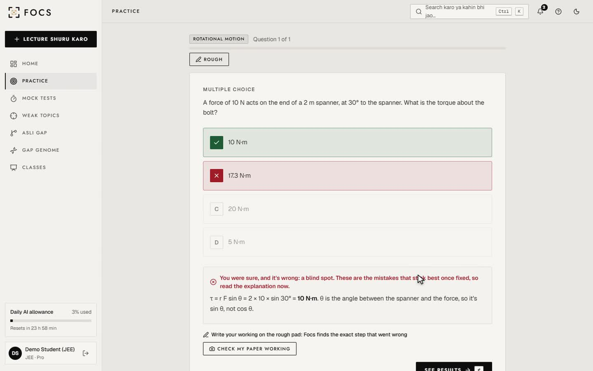
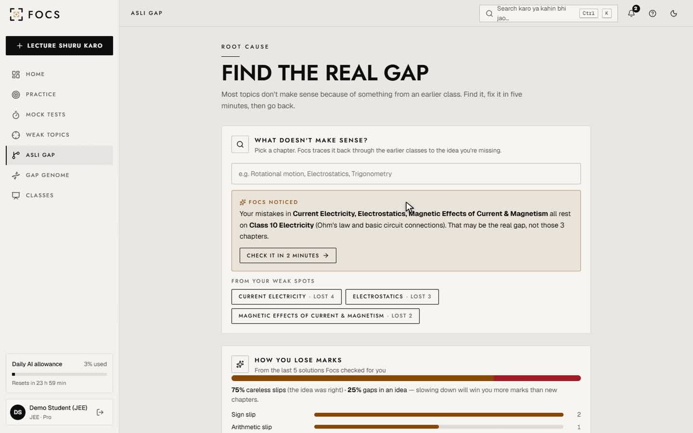
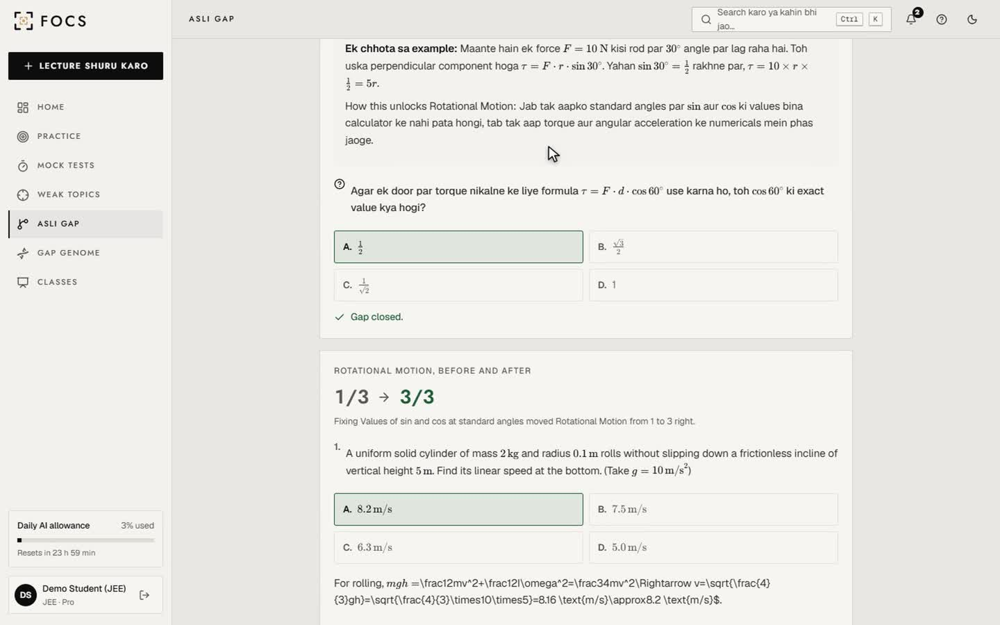
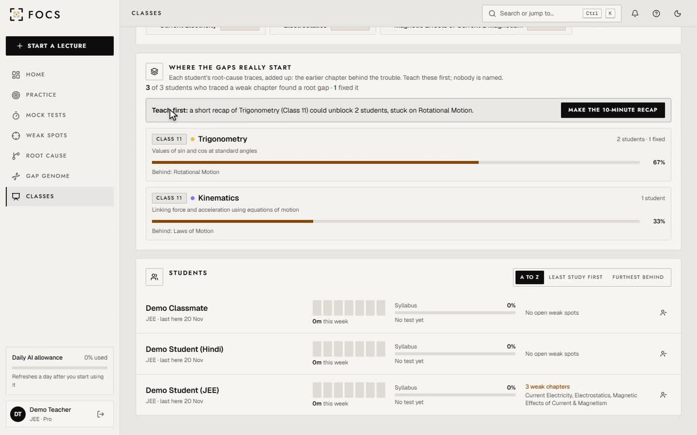
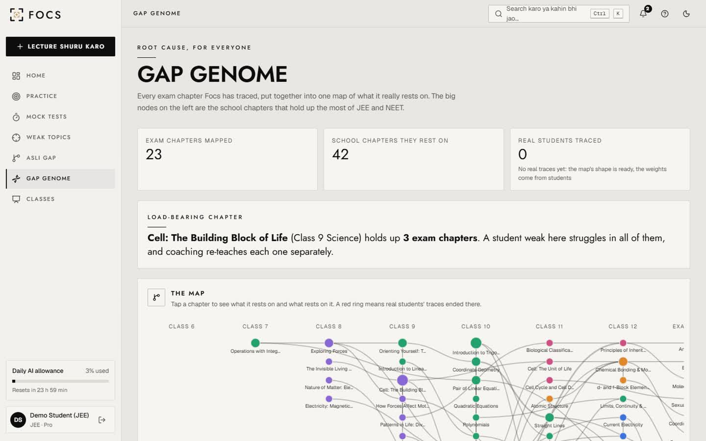
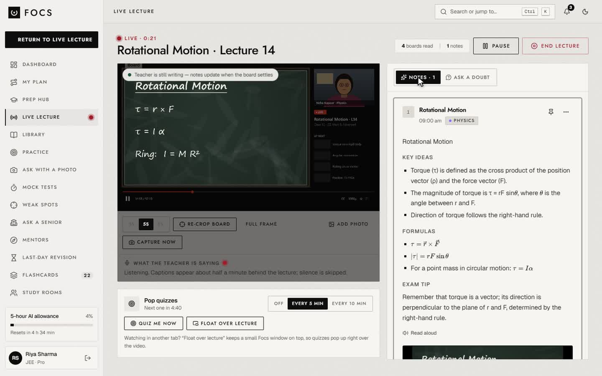
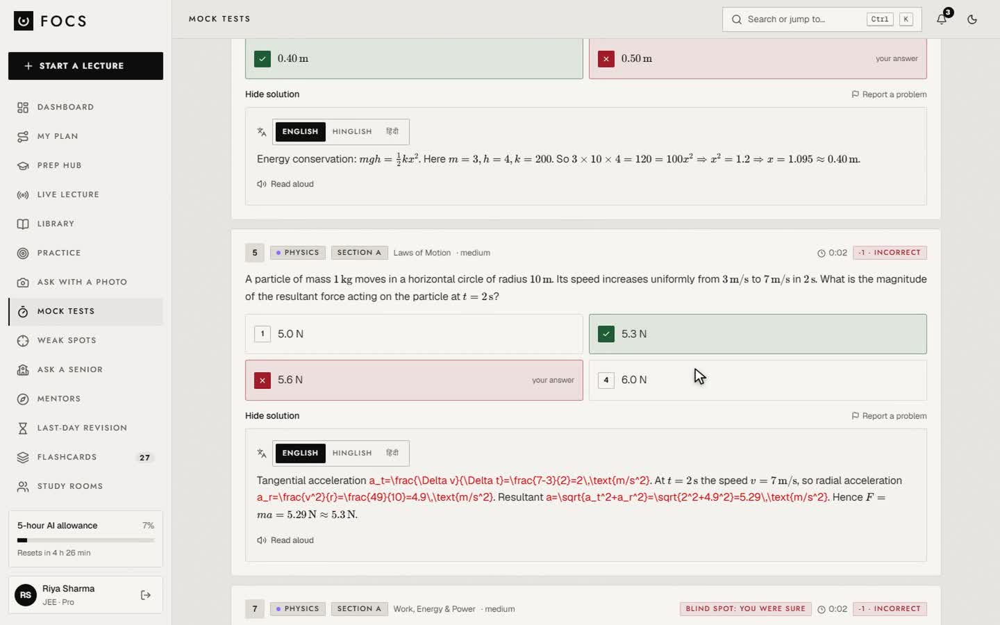
first real Gemini runs; 3.8 s in the filmed demo. A call once took 80 s, hence the 8 s second-model rule.
step, slip vs gap, and no false alarm on 3 pages labelled before the run. A smoke test, not an accuracy claim.
vs 7.27% for PP-OCRv4 on the same 240 held-out lecture frames (synthetic: flatters any model).
OCR-only floor with the AI off; the hosted number is measured before it's quoted.
Photos of working are read and not kept (the check keeps text only). Teachers see counts, never names. Many students are under 18: contacts masked, chats reportable. AI drafts are always labelled as AI.
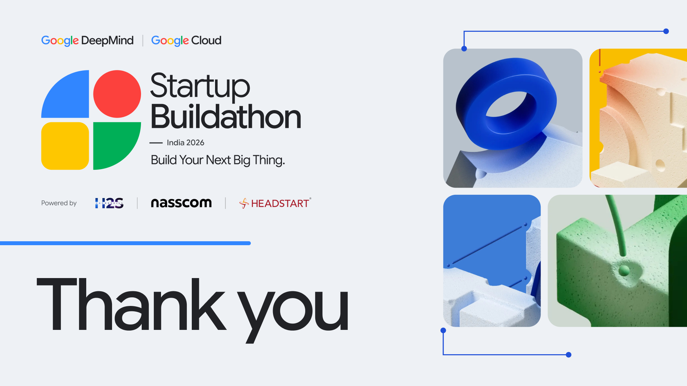